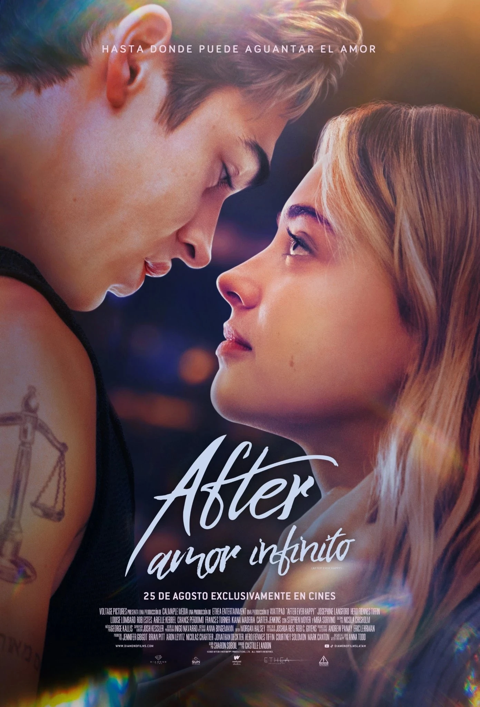

After: amor infinito
Tessa Young acaba de llegar a la universidad, y su estable y ordenada vida da un giro busco al conocer al misterioso Hardin Scott, cuyo pasado es algo oscuro. Aunque de entrada se odian, estos polos opuestos se unirán y nada volverá a ser como antes. Tendrán que enfrentarse amultiples pruebas como la inocencia y el descubrimiento sexual, para poder estar juntos.
Necesitas ayuda?
llama al 008 25 09 123
Creado por
Magdalena Almazán Hernández
Gabriela Bruno Simón
Ana Flores Carreón
Sarahi Valentín Gutierrez
Conalep 173 de la carrera de P.T.B en informática